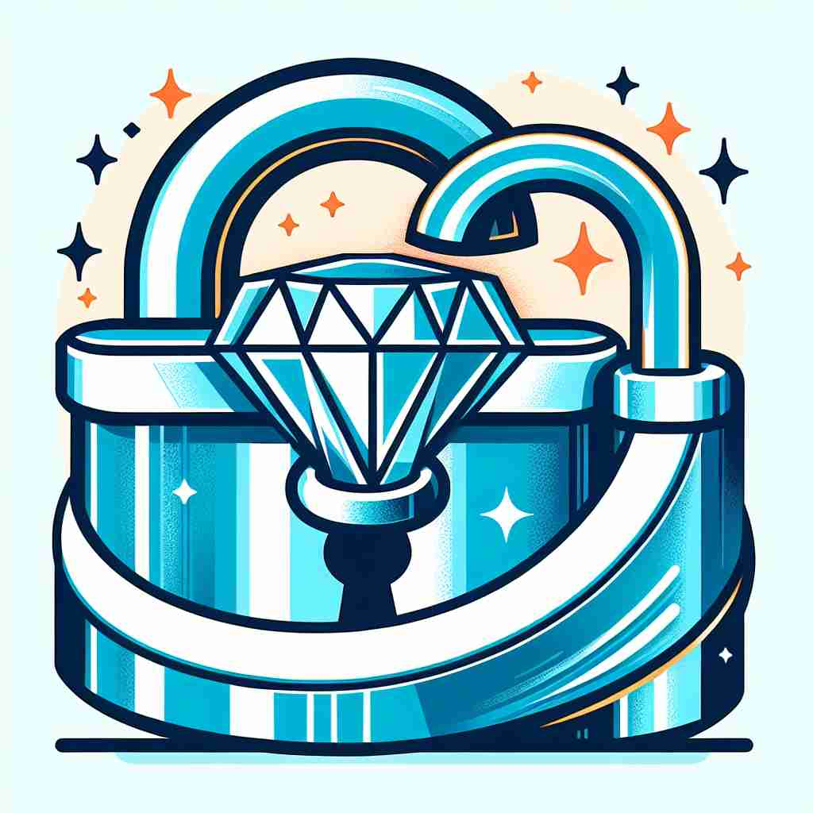

💬 The company will guarantee quality for all its products.

💬 The padlock is here to guarantee safety for the precious diamond.
💬 He wants to guarantee a promise to his clients.

💬 They shake hands to guarantee a deal.
🔈 [gær(ə)n'tiː]
🗝️ v. to promise that something will happen or that something is true
🖼️ 在一个热闹的市场中，卖家向顾客微笑道："我向您保证，这个手表绝对是正品，您绝对不会失望。"这样的承诺体现了'guarantee'作为承诺某事会发生或是真实的含义。
🔍 想象'guarantee'是一个坚实的承诺，就像一座桥梁连接现在和未来。无论是作为动词表示承诺或确保，还是作为名词表示保证或担保人，都源于这个'坚实承诺'的核心概念。通过联想这个坚固的桥梁，你可以轻松记住和理解'guarantee'的各种用法。
💬 The company will guarantee quality for all its products.
💬 The padlock is here to guarantee safety for the precious diamond.
💬 He wants to guarantee a promise to his clients.
💬 They shake hands to guarantee a deal.
🌳 由词根 "guar-"（来自古法语的 защищать, 保护）加上后缀 "-antee"，构成一个名词或动词，表示 "保证，担保"。
💡 可以联想为 "ward"（守卫）和 "ensure"（确保）的结合，通过想象“保护并确保某物”的过程来记住它的意义。
🗝️ v. to make certain that something will happen
🖼️ 在一个大型活动的策划会议上，项目经理说："为了确保所有来宾准时到达，我们会安排专车接送工作。"这里，经理确保事情会发生，展示了'guarantee'的此类含义。
💬 The government guarantees free education for all children.
❓ 从"承诺"到"确保"，强调采取行动实现承诺
🗝️ n. a formal promise that something will be done or will happen
🖼️ 在一家电子产品店，顾客拿到一张写有两年保修的纸，店员说："这是我们对您新购电视机的保证，任何问题在此期间都可修理。"这体现了'guarantee'作为正式承诺的含义。
💬 This watch comes with a two-year guarantee.
❓ 将动词"承诺"具象化为名词形式
🗝️ n. someone who agrees to be responsible for someone else's debt if they cannot pay it
🖼️ 在一个银行办公室中，一位朋友对贷款顾问说："我愿意作为他的担保人，确保他可以顺利获得这笔贷款。"这反映了'guarantee'作为承诺负责他人债务的人的含义。
💬 His father acted as a guarantee for his bank loan.
❓ 从"承诺"延伸到"承担责任的人"
🗝️ n. something that makes an outcome sure
🖼️ 在一个激烈的篮球比赛中，教练对队员说："你的努力是我们胜利的保证，再坚持一点。"这个场景展示了'guarantee'作为确保结果发生的事物的含义。
💬 Hard work is no guarantee of success, but it certainly helps.
❓ 从"承诺"引申为"确保结果的事物"